<?xml version="1.0" encoding="UTF-8"?><rss version="2.0"
	xmlns:content="http://purl.org/rss/1.0/modules/content/"
	xmlns:wfw="http://wellformedweb.org/CommentAPI/"
	xmlns:dc="http://purl.org/dc/elements/1.1/"
	xmlns:atom="http://www.w3.org/2005/Atom"
	xmlns:sy="http://purl.org/rss/1.0/modules/syndication/"
	xmlns:slash="http://purl.org/rss/1.0/modules/slash/"
	>

<channel>
	<title>Blog Archives - NewTechWood</title>
	<atom:link href="index.html" rel="self" type="application/rss+xml" />
	<link>https://www.newtechwoodintl.com/blog/category/blog/</link>
	<description></description>
	<lastBuildDate>Thu, 08 Jan 2026 09:24:27 +0000</lastBuildDate>
	<language>en-US</language>
	<sy:updatePeriod>
	hourly	</sy:updatePeriod>
	<sy:updateFrequency>
	1	</sy:updateFrequency>
	<generator>https://wordpress.org/?v=6.8.1</generator>

<image>
	<url>https://www.newtechwoodintl.com/wp-content/uploads/2025/07/newtechwood-Site-Favicon.svg</url>
	<title>Blog Archives - NewTechWood</title>
	<link>https://www.newtechwoodintl.com/blog/category/blog/</link>
	<width>32</width>
	<height>32</height>
</image> 
	<item>
		<title>Composite Deck Railing vs. Aluminum Railing</title>
		<link>https://www.newtechwoodintl.com/blog/composite-deck-railing-vs-aluminum-railing-2/</link>
		
		<dc:creator><![CDATA[wang, xiao]]></dc:creator>
		<pubDate>Tue, 18 Mar 2025 00:00:00 +0000</pubDate>
				<category><![CDATA[Blog]]></category>
		<guid isPermaLink="false">https://test.newtechwoodintl.com/blog-composite-deck-railing-vs-aluminum-railing-2/</guid>

					<description><![CDATA[<p>Compare composite and aluminum deck railings: sleek aluminum for durability, low-maintenance composite for traditional styles.</p>
<p>The post <a href="../../../composite-deck-railing-vs-aluminum-railing-2/index.html">Composite Deck Railing vs. Aluminum Railing</a> appeared first on <a href="../../../../index.html">NewTechWood</a>.</p>
]]></description>
										<content:encoded><![CDATA[<p>When your deck project comes down to some final design choices such as aluminum vs. composite deck railings, know that you’ve already made one smart decision by not considering wood as a material.</p>
<p>Even treated lumber decking needs far more maintenance than other outdoor materials. Painting or staining spindles or balusters every couple of years is a duty that no homeowner should invite, and no designer or contractor should create. That’s why when it comes to your deck railing, aluminum vs. composite should be your only consideration.</p>
<p>Even with only two options, there are many factors to consider. From appearance to cost, maintenance and durability, here are the pros and cons of composite vs. aluminum deck railing:</p>
<h2>Appearance</h2>
<p>This is less a matter of quality than of preference. In general, aluminum lends itself to more modern, less bulky looks. Composite, similarly to wood, can provide the visual heft suitable for more traditional looks. However, given the number of rail profiles and colors available, not to mention spindle and baluster options, composite can transition comfortably into any design aesthetic.</p>
<h2>Cost</h2>
<p>Costs can vary wildly — especially if you’re eschewing traditional spindles in favor of glass panels or cable — but the range for aluminum generally starts a bit higher than that for composite.</p>
<p>Other factors include whether you’re going the DIY route or hiring a contractor, the complexity of the install and the quality of the material chosen. When comparing upfront costs, also consider warranties, which are a good gauge of the manufacturer’s performance expectations.</p>
<p>The good news is maintenance costs for either aluminum or composite will offset initial upfront costs compared to less expensive materials.</p>
<h2>Maintenance</h2>
<p>Aluminum is typically powder coated, making it essentially waterproof. It also responds very well to changing weather conditions, be it extreme heat or cold. While fading isn’t a problem, upkeep is necessary. Surface mold is common, but it can be easily cleaned away with a power washer. Wiping down with mild cleansers will keep the need for power washing down to once or twice a year. Don’t use abrasive — and if the powder coating is damaged, touch it up (manufacturers typically can provide touch-up kits).</p>
<p>Composite maintenance depends largely on the product you buy. Some require an occasional scrubbing with a soft-bristle brush. NewTechWood’s composite capped with UltraShield brings enhanced stain resistance, surface mold and mildew can be sprayed away with a garden hose, and fading is minimal compared to conventional composites.</p>
<h2>Durability</h2>
<p>Aluminum is very resilient. It is also harder than composite rail materials, so it is tougher to scratch or dent. Lifetime warranties aren’t unheard of for aluminum railings, but review any warranty’s fine print for terms that make such promises easily voided.</p>
<p>While offering the look of wood, composite rail systems don’t have many of the issues wood has, inlcuding splitting, twisting, staining, fading, mold and insect infestation. High-quality, well-maintained composites should have no trouble outliving even 25-year warranties — which is what you should expect a high-quality manufacturer to offer.</p>
<h2>NewTechWood Can Meet Your Needs</h2>
<p>Whether you’re a homeowner, home building, contractor or architect, NewTechWood has the solutions for your railing needs. Whether you’re looking for <a href="../../../../product/aluminum-railing/index.html">aluminum railings</a> or our innovative, 25-year-warranteed <a href="../../../../product/composite-railing/index.html">composite railings</a>, NewTechWood is sure to meet your needs with our array of stock colors, patterns and profiles — or even custom colors for larger orders. Contact us today to see why NewTechWood should be your choice for railings.</p>


<p></p>
<p>The post <a href="../../../composite-deck-railing-vs-aluminum-railing-2/index.html">Composite Deck Railing vs. Aluminum Railing</a> appeared first on <a href="../../../../index.html">NewTechWood</a>.</p>
]]></content:encoded>
					
		
		
			</item>
		<item>
		<title>Why Builders Choose NewTechWood</title>
		<link>https://www.newtechwoodintl.com/blog/why-builders-choose-newtechwood/</link>
		
		<dc:creator><![CDATA[wang, xiao]]></dc:creator>
		<pubDate>Tue, 09 May 2023 00:00:00 +0000</pubDate>
				<category><![CDATA[Blog]]></category>
		<guid isPermaLink="false">https://test.newtechwoodintl.com/blog-why-builders-choose-newtechwood/</guid>

					<description><![CDATA[<p>Ideal for contractors prioritizing efficiency, low maintenance, and client satisfaction—plus DIY-friendly solutions for homeowners.</p>
<p>The post <a href="../../../why-builders-choose-newtechwood/index.html">Why Builders Choose NewTechWood</a> appeared first on <a href="../../../../index.html">NewTechWood</a>.</p>
]]></description>
										<content:encoded><![CDATA[<p>Successful building contractors need to get the “job” done quickly, professionally, and to the highest quality standards. To ensure the best value for their customers, these construction professionals look for materials and building systems that save time while delivering the quality that customers expect.</p>
<p>Contractors choose NewTechWood for a lot of good reasons.</p>
<p>1. <strong>NewTechWood</strong> decking and siding are fast and simple to install, lowering the total cost of the project in an industry where time is, indeed, money. This enables contractors to deliver quality, good looks, and durability on all exterior builds where weather and wood composite meet.</p>
<p>2. Composite decking and siding exceed industry standards for strength and durability.<strong> NewTechWood with Ultrashield</strong> passes all ASTM standards. ASTM International, an international association defining quality standards for everything from concrete to wood composite, was founded in 1898 to provide uniform quality standards across building materials.</p>
<p>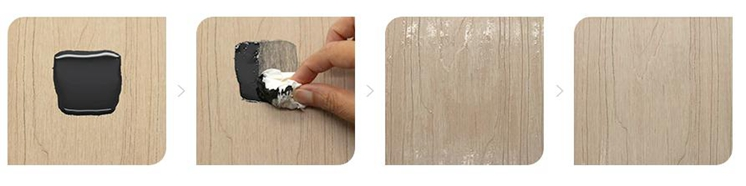</p>
<p>3. NewTechWood is stain resistant, scratch resistant, and fade resistant. Each wood-toned composite plank is waterproof, as well – something homeowners appreciate with the passing of each season. Contractors choose NewTechWood because their customers want easy maintenance, and a deck or siding crafted from composite is a key selling point on new builds, or when an existing home goes up for sale.</p>
<p>4. NewTechWood is strong with a live load rating to span 16 feet on center for joist spacing. When supports run diagonally, a 12 foot run is recommended. You get more deck, a stronger deck, and a longer-lasting deck when your contractor picks <strong>NewTechWood</strong>.</p>
<p>5. NewTechWood decking, floor tiles, siding, railings, stairways, pool enclosures – all can be installed using standard tools. You can cut it, drill and screw into it, you can even use a router to deliver a unique, customized finish.</p>
<p>6. Contractors also choose NewTechWood with Ultrashield because it stands up to mold, mildew and other allergens. Each piece of Ultrashield is infused with mold inhibitors so you and your family don’t worry about potentially dangerous molds that can harm the health of your loved ones.</p>
</p>
<p>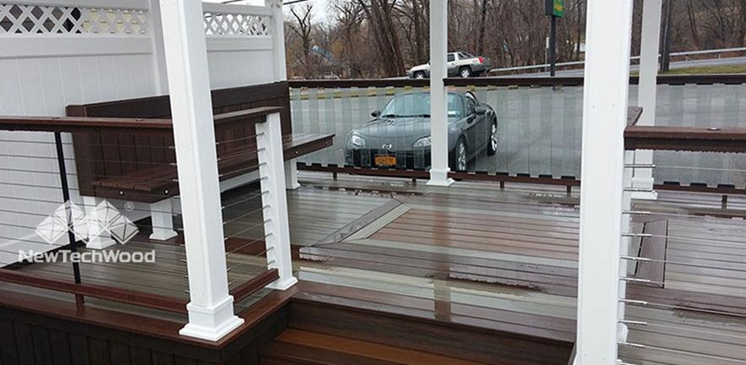</p>
</p>
<p>7. <strong>NewTechWood</strong> delivers design options to suit a variety of tastes. What’s your customer’s style preference? Contemporary? Traditional? Exotic? <strong>NewTechWood</strong> comes in a variety of colors to fit any décor including: teak, walnut, weathered gray, oak, ipe, charcoal, and more.</p>
<p>Choose the look that catches your eye. Then, talk things over with your building contractor.</p>
</p>
<p>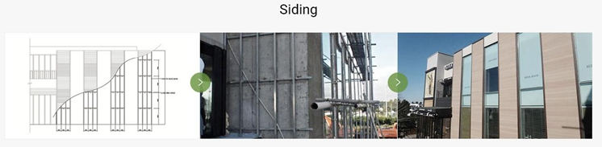</p>
</p>
<p>8. NewTechWood with Ultrashield comes with a 25-year <strong>transferable warranty</strong> for up to five years. Commercial installations are guaranteed for 10 years because composite, created from recycled plastics and wood fibers, stands up to heavy use, and cleans up with a brush and hose.</p>
<p>That’s what contractors and their customers want.</p>
</p>
<p>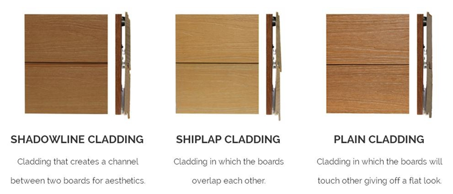</p>
</p>
<p>9. Siding made by NewTechWood is eco-friendly. <strong>Installation is simple using our proprietary system of clips</strong> that hold each plank securely in place, while providing just enough air flow to allow your home, restaurant, shop or office to breathe.</p>
</p>
<p>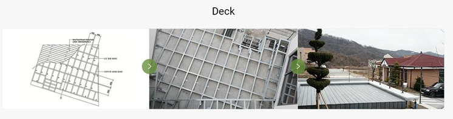</p>
</p>
<p>10. Building contractors know what their customers want. Convenience, easy and quick installation, low maintenance, and value that lasts for decades. These construction professionals turn to NewTechWood to deliver the results customers want – good looks, easy care, durability to stand up to sun and weather, and a warranty that delivers complete peace of mind.</p>
<p>The needs of construction professionals differ from the do-it-yourself weekend warrior, though both want that finished, professional look that draws compliments from visitors and neighbors.</p>
<p>If you plan to build your own deck, without the help of a professional contractor, NewTechWood keeps things simple. All you need is a screwdriver. Really, it’s that easy. However…</p>
<p>…if you’ve made the choice to hire a professional to construct your deck, or to add new siding to your home, choose the wood hues of NewTechWood and tell your contractor you want the best.</p>
<p>&nbsp;</p>
<p>The post <a href="../../../why-builders-choose-newtechwood/index.html">Why Builders Choose NewTechWood</a> appeared first on <a href="../../../../index.html">NewTechWood</a>.</p>
]]></content:encoded>
					
		
		
			</item>
		<item>
		<title>Deck Safety: It’s More Than the Surface</title>
		<link>https://www.newtechwoodintl.com/blog/deck-safety-its-more-than-the-surface/</link>
		
		<dc:creator><![CDATA[wang, xiao]]></dc:creator>
		<pubDate>Tue, 09 May 2023 00:00:00 +0000</pubDate>
				<category><![CDATA[Blog]]></category>
		<guid isPermaLink="false">https://test.newtechwoodintl.com/blog-deck-safety-its-more-than-the-surface/</guid>

					<description><![CDATA[<p>Prioritize safety with resilient, low-maintenance solutions that blend style and science for worry-free outdoor spaces.</p>
<p>The post <a href="../../../deck-safety-its-more-than-the-surface/index.html">Deck Safety: It’s More Than the Surface</a> appeared first on <a href="../../../../index.html">NewTechWood</a>.</p>
]]></description>
										<content:encoded><![CDATA[		<div data-elementor-type="wp-post" data-elementor-id="2134" class="elementor elementor-2134" data-elementor-post-type="post">
				<div class="elementor-element elementor-element-70c845c3 e-flex e-con-boxed e-con e-parent" data-id="70c845c3" data-element_type="container">
					<div class="e-con-inner">
				<div class="elementor-element elementor-element-7b47462e elementor-widget elementor-widget-text-editor" data-id="7b47462e" data-element_type="widget" data-widget_type="text-editor.default">
									<p>What do you look for in a deck?</p><p>Style? Comfort? Durability?</p><p>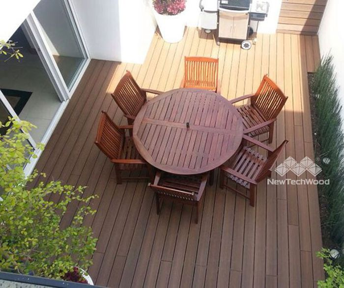</p><p>There are so many decks that may have the right color and texture, but lack in durability and strength.  All that beauty could be just a façade covering a weak and poor quality deck that is far from being safe.  Your deck’s safety is one feature that you should never compromise on.</p><p>It is recommended to schedule regular professional deck inspections to make sure no safety issues would go unnoticed.  Even though most of the deck inspectors will only inspect the joists, posts, foundation, and hardware, the inspections should go further than just the surface.  You also need to have its structure evaluated.</p><p>Most of these problems are caused by excessive exposure to snow, rain, or humidity.</p><p>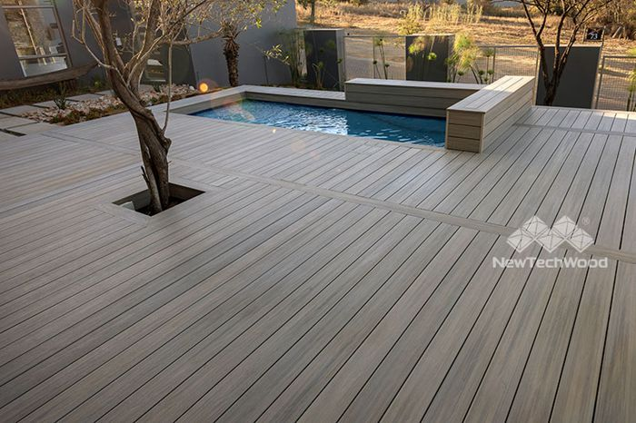</p><p>The most common factors that present the greatest risk to the safety of your deck are moisture infiltration and insect damage.  For a deck to be considered as safe, it should be both insect-proof and waterproof.</p><p><strong>Moisture-Resistant Decking</strong></p><p>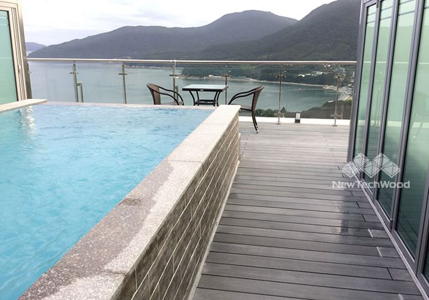</p><p>The safety of a deck goes hand-in-hand with its waterproof capabilities.  Safe decks should not allow even the slightest moisture infiltration.  Not only does moisture ruin the appearance of wooden decks – both in color and texture – but it also accelerates the rotting of the wood which compromises on the strength of the deck.</p><p>High-quality deck composite decks are waterproof and will prevent any moisture infiltration into the deck.  This can be attributed to the fact they are made from recycled plastic and wood fibers.</p><p>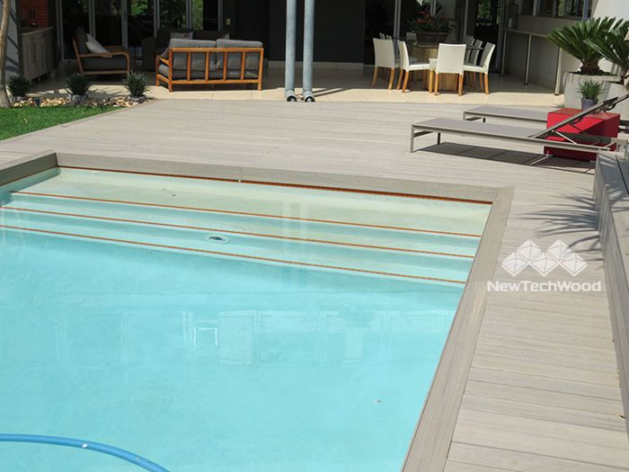</p><p>The moisture-resistant feature makes composite decking a much better alternative for outdoor decking compared to wooden decks. It’s suitable for regions that are wet most part of the year.</p><p><strong>Insect-Resistant Decking</strong></p><p>Insect damage is another great concern for deck safety, and more specifically, damage from termites, carpenter bees, and carpenter ants.  These insects are known to establish their nests and colonies under wooden decks, and will indiscriminately bore holes and alter the deck’s stability.  As a result, your deck may weaken and collapse.</p><p>So how do you get rid of these insects?</p><p>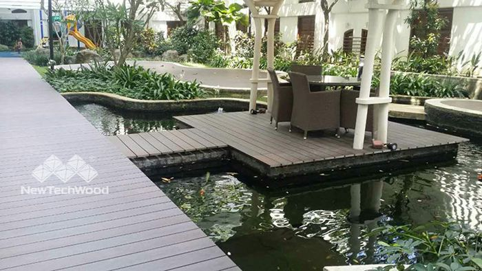</p><p>You could try the traditional pest control mechanisms like smoking and use of insecticides.  But they will just come back when the chemicals wear off.  You can completely solve this problem by replacing your worn-out wooden deck with a composite deck.</p><p>Composite decks provide a better substitute because they have outer polymer layers that protect the inner core from the damage caused by pesky insects.  In addition, they don’t have the resin found in natural wood and, hence, don’t attract any insects.</p><p><strong>Safety First with NewTechWood Composite Decking</strong></p><p>With NewTechWood composite decking, deck safety isn’t just superficial.</p><p>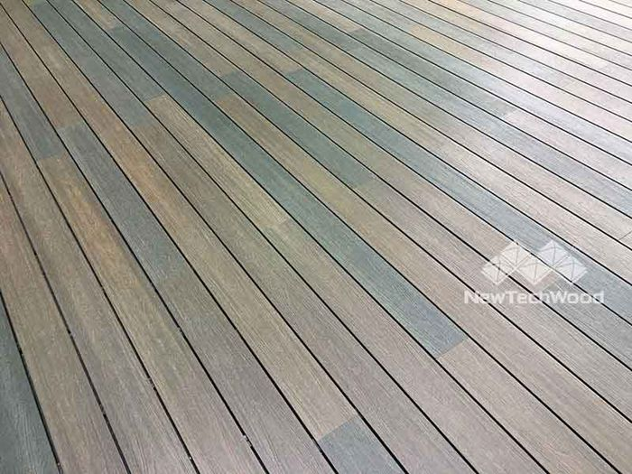</p><p>Our <a href="../../../../product/decking/index.html">UltraShield decks</a> combine the proved strength of high-density polyethylene plastics with that of wood fibers, and have tough outer polymer shells that encapsulate the boards to provide a resilient layer of protection.</p><p>NewTechWood composite decks are durable regardless of the climatic conditions of the region it’s used in.  We offer a 25-year limited transferable warranty for all our decks.  This serves as a testament to our top-of-the-line and safe capped composite decking.</p><p>Stay safe with NewTechWood!</p>								</div>
					</div>
				</div>
				</div>
		<p>The post <a href="../../../deck-safety-its-more-than-the-surface/index.html">Deck Safety: It’s More Than the Surface</a> appeared first on <a href="../../../../index.html">NewTechWood</a>.</p>
]]></content:encoded>
					
		
		
			</item>
		<item>
		<title>Best Outdoor Shower Floor Materials</title>
		<link>https://www.newtechwoodintl.com/blog/outdoor-shower-floor-ideas/</link>
		
		<dc:creator><![CDATA[wang, xiao]]></dc:creator>
		<pubDate>Fri, 24 Feb 2023 00:00:00 +0000</pubDate>
				<category><![CDATA[Blog]]></category>
		<guid isPermaLink="false">https://test.newtechwoodintl.com/blog-outdoor-shower-floor-ideas/</guid>

					<description><![CDATA[<p>Composite materials are perfect for creating an outdoor shower floor. Click here to learn what makes them the right choice for your project.</p>
<p>The post <a href="../../../outdoor-shower-floor-ideas/index.html">Best Outdoor Shower Floor Materials</a> appeared first on <a href="../../../../index.html">NewTechWood</a>.</p>
]]></description>
										<content:encoded><![CDATA[<p>Having an outdoor shower as part of your pool is convenient for rinsing off after a swim. If you’re thinking of adding one to your backyard, it’s important that you choose the right materials, especially for the flooring. You want it to be comfortable, attractive and durable. If not, you won’t be able to get the maximum amount of enjoyment from your setup. Although there are a number of options out there, including natural hardwood, ceramic tile and concrete, the best choice for your project just might be composite decking. Made from a combination of natural wood fibers and recycled plastic, composites offer a number of benefits that make them ideal for an outdoor shower floor. Read on to learn more about why.</p>
<h2>Why Composite Materials Work Best for Outdoor Showers</h2>
<p>An outdoor shower floor DIY project becomes quick, easy and virtually maintenance-free when you use <a href="../../../../product/decking/index.html">composite decking</a> or <a href="../../../../product/deck-tiles/index.html">composite deck tiles</a>. Here are just a few reasons why you should consider them:</p>
<ul>
<li><strong>Moisture resistant: </strong>Because it is made with plastic, composite deck material offers stronger waterproofing than most natural woods. This means it won’t be subject to damage caused by swelling and shrinking due to moisture absorption. Additionally, you won’t have to worry about growth of mold or mildew that can cause problems with wood flooring outdoors.</li>
<li><strong>Stylish options: </strong>If you want to have the look of a teak outdoor shower floor or any other type of wood, composite can deliver it alongside all the other benefits. These materials come in a wide variety of styles that feature unique wood grain patterns and colors to match just about any type of appearance you want for your space. Composite can look just like the real thing without all the hassle that comes with it.</li>
<li><strong>Simple installation: </strong>Composite also makes the best outdoor shower floors because it’s easy to install. Whether you use cut planks or tiles, these don’t require any additional work compared to other materials.</li>
<li><strong>Low maintenance: </strong>Protecting wood from moisture, UV exposure and mold means keeping it sealed, stained and cleaned on a regular basis. On the other hand, composite decking is already sealed against moisture, resists fading in direct sunlight and does not allow mold growth. This means you won’t have to spend much time keeping your shower floor in good condition.</li>
<li><strong>Enhanced comfort: </strong>You may not spend as much time in your outdoor shower as you would the one in your bathroom, but being comfortable while you use it still is important. Composite materials aren’t susceptible to splinters or cracks, and they don’t retain as much heat. This means you can stand on it barefoot without worrying about hurting your feet.</li>
</ul>
<h2>Trust NewTechWood for Your Project</h2>
<p>Installing composite materials is one of the best outdoor shower floor ideas when you’re planning your project. NewTechWood is an industry leader with all the professional expertise needed to help you find the ideal solution for your needs. We have a wide range of products, including composite tiles, to make creating your outdoor shower area easy, affordable and exactly what you want it to be. With our help, you can have the backyard shower you’ve always wanted, and be sure that it will continue to offer the same level of comfort and performance for a long time to come.</p>
<p>To learn more about everything we can do for you, get in touch with us today.</p>
<p>The post <a href="../../../outdoor-shower-floor-ideas/index.html">Best Outdoor Shower Floor Materials</a> appeared first on <a href="../../../../index.html">NewTechWood</a>.</p>
]]></content:encoded>
					
		
		
			</item>
		<item>
		<title>Is Composite Decking Good Around Pools?</title>
		<link>https://www.newtechwoodintl.com/blog/composite-decking-around-pools/</link>
		
		<dc:creator><![CDATA[wang, xiao]]></dc:creator>
		<pubDate>Fri, 24 Feb 2023 00:00:00 +0000</pubDate>
				<category><![CDATA[Blog]]></category>
		<guid isPermaLink="false">https://test.newtechwoodintl.com/blog-composite-decking-around-pools/</guid>

					<description><![CDATA[<p>Is composite decking good around pools? Click here to learn what makes these materials the perfect choice for your project.</p>
<p>The post <a href="../../../composite-decking-around-pools/index.html">Is Composite Decking Good Around Pools?</a> appeared first on <a href="../../../../index.html">NewTechWood</a>.</p>
]]></description>
										<content:encoded><![CDATA[<p>Building a backyard pool is a great way to maximize your fun in the sun as well as boost the value of your property. As excited as you may be about your new addition, there are a lot of decisions you’ll need to make that contribute to how much you’ll be able to enjoy it.</p>
<p>One of the most important but overlooked choices is the decking you’ll install around your pool. You want it to be durable, attractive and relatively maintenance-free, otherwise you might spend more time repairing or maintaining it than you do relaxing on it. As you research your options, you are sure to discover advanced composite materials made from recycled plastic and natural wood fibers. But is composite decking good around pools? Read on to learn why when you’re building a pool, composite decking makes a lot of sense.</p>
<h2>Why Composite Decking Makes a Great Choice</h2>
<p>There are a number of reasons why it’s a good idea to choose composite decking around pools. These include:</p>
<ul>
<li><strong>Moisture resistance: </strong>Unlike traditional wood that needs to be sealed and maintained to protect it from moisture, composite decking around above-ground pools repels water thanks to its combination of wood and plastic materials. This ensures you won’t have to worry about damages caused by swelling, rot or mold growth.</li>
<li><strong>Easy installation: </strong>Today’s composite decking products don’t require any additional framing to be as strong and durable as traditional lumber. This means you can install it just as quickly and easily as you would a wooden deck, cutting down on your labor costs.</li>
<li><strong>Greater comfort: </strong>Having composite decking around your in-ground pool not only looks good, but also provides more comfort than wood or concrete. The smooth, splinter-free surface means it’s always safe to walk on with bare feet. The unique nature of its composition also means it doesn’t retain heat the way concrete does, meaning you can walk across it without scorching the soles of your feet on a sunny day.</li>
<li><strong>Attractive appearance: </strong>Most people would have a difficult time telling the difference between composite decking and traditional lumber at a glance. Despite their advanced construction, these materials look just like real wood. They are available in a wide range of styles to match virtually any variety of natural hardwood, even featuring non-repeating wood grain to appear indistinguishable from the real thing.</li>
<li><strong>Low maintenance: </strong>Wood requires a lot of upkeep when used as decking around a pool. This means sealing it, keeping it clean and replacing any elements that become worn out or damaged. However, using composite decking means you can spend less time working on your pool and more time enjoying it. These materials resist fading from the sun as well as damages from exposure to moisture.</li>
</ul>
<h2>Choose NewTechWood for Your Pool Decking</h2>
<p>No matter what type of composite materials you choose for your project, having professional expertise you can count on is critical. As the leaders in the industry, NewTechWood have the best selection of products and the most knowledgeable pros in the business. We have a vast inventory of <a href="../../../../product/decking/index.html">composite decking</a> and <a href="../../../../product/deck-tiles/index.html">composite deck tiles</a> to help you complete your backyard oasis so it provides the maximum levels of fun and relaxation for you and your family.</p>
<p>If you want to learn more about what we have to offer and how we can help, reach out and speak with one of our representatives today.</p>
<p>The post <a href="../../../composite-decking-around-pools/index.html">Is Composite Decking Good Around Pools?</a> appeared first on <a href="../../../../index.html">NewTechWood</a>.</p>
]]></content:encoded>
					
		
		
			</item>
		<item>
		<title>HOW TO INSTALL DECK TILES</title>
		<link>https://www.newtechwoodintl.com/blog/how-to-install-composite-deck-tiles/</link>
		
		<dc:creator><![CDATA[wang, xiao]]></dc:creator>
		<pubDate>Wed, 15 Feb 2023 00:00:00 +0000</pubDate>
				<category><![CDATA[Blog]]></category>
		<guid isPermaLink="false">https://test.newtechwoodintl.com/blog-how-to-install-composite-deck-tiles/</guid>

					<description><![CDATA[<p>With NewTechWood, you can learn how to install deck tiles and choose the best product for a fabulous new outdoor space. Click here to begin.</p>
<p>The post <a href="../../../how-to-install-composite-deck-tiles/index.html">HOW TO INSTALL DECK TILES</a> appeared first on <a href="../../../../index.html">NewTechWood</a>.</p>
]]></description>
										<content:encoded><![CDATA[<p>Easy installation. Fast transformations. Cost effectiveness. Endless customization of colors and patterns. If you’re a renter, when you’re ready to move on, you can break it down and take it with you.</p>
<p>No wonder composite deck tiles are an option high on many lists when people are looking to refresh an outdoor space, be it a faded patio, uninspired balcony or dated deck.</p>
<p>Understanding how to install deck tiles isn’t terribly complicated, but not knowing how to lay decking tiles can turn a quick home improvement project into fast-track frustration over wasted time and money.</p>
<p>&nbsp;</p>
<h2>Deck Tile Basics</h2>
<p>Deck tiles are designed for easy installation on existing flat substructures. Such substructures include existing decks, patios, balconies, level gravel and compacted dirt.</p>
<p>Typically, deck tiles incorporate composite or wood slats attached to a plastic lattice that serves as support and a system for locking the tiles to each other.</p>
<p>NewTechWood’s tiles come in three sizes: 1 square foot, 1 x 2 and 1 x 3, as well as single-slat versions of all those lengths. Our flexible locking system allows flush and offset attachment of tiles on all four sides. We also offer a variety of fascia, trim and stair nosing options to finish your project.</p>
<p>&nbsp;</p>
<h2>Realize Your Vision</h2>
<p>Aesthetically, composite deck tiles are adaptable enough to bring any look to life, from ultra-modern and minimal to rustic to quirky bohemian.</p>
<p>NewTechWood stocks 25 standard colors and can also create custom colors. We also have artificial grass tiles, which blend seamlessly to form lush artificial lawns that never need watering or mowing, and 1 x 1 stone tiles, both of which work with the deck tiles in any combination.</p>
<p>You can go for the monochromatic symmetry of one color and straight lines, mix things up with anything from a classic checkerboard pattern to joining tiles of different sizes, or combine decking, grass and stone for the maximum wow factor.</p>
<p>Once you’ve figured out your desired look, it’s time to make the plan and execute the vision.</p>
<p>&nbsp;</p>
<h2>Making it Happen</h2>
<p>Installing a composite deck is a reasonably straightforward process. Breaking it down:</p>
<ol>
<li>Measure and order. Calculate the square footage you intend to cover. Include expansion gaps where necessary on the perimeter. Most installers recommend ordering 10% more flooring than what would be required to exactly cover your project area, allowing for cut tiles at the perimeter.</li>
<li>Prepare your surface. It has to be level. For a lawn installation, that means removing grass and compacting soil or adding a leveler such as sand or gravel; for decks that means redriving loosened screws and replacing or repairing warped boards; for patios, a good sweeping or power washing should be all you need.</li>
<li>Start snapping. Lay in the tiles, starting with a row that won’t require any cuts. Lay in as many full tiles as you can, then cut in the rest.</li>
</ol>
<p>&nbsp;</p>
<h2>Work With a Pro</h2>
<p>Though NewTechWood’s composite deck tiles are designed to be installed easily by virtually anyone, nothing is more important than consulting with a professional supplier before launching into your project. If you’re doing the job yourself, when you choose NewTechWood products you’ll get the benefit of our experience to help you avoid missteps along the way. And of course, you’ll end up with an installation that will give you years of beautiful, worry-free use.</p>
<p>Whether you’re choosing <a href="../../../../product/decking/index.html">composite decking</a> or <a href="../../../../product/deck-tiles/index.html">composite deck tiles</a>, contact NewTechWood today to learn about our products and the simple <a href="../../../how-to-clean-composite-decking/index.html">deck care</a> required for years of enviable outdoor space.</p>
<p>The post <a href="../../../how-to-install-composite-deck-tiles/index.html">HOW TO INSTALL DECK TILES</a> appeared first on <a href="../../../../index.html">NewTechWood</a>.</p>
]]></content:encoded>
					
		
		
			</item>
		<item>
		<title>Is Composite Decking Truly Maintenance-Free?</title>
		<link>https://www.newtechwoodintl.com/blog/composite-decking-maintenance-free/</link>
		
		<dc:creator><![CDATA[wang, xiao]]></dc:creator>
		<pubDate>Thu, 22 Dec 2022 00:00:00 +0000</pubDate>
				<category><![CDATA[Blog]]></category>
		<guid isPermaLink="false">https://test.newtechwoodintl.com/blog-composite-decking-maintenance-free/</guid>

					<description><![CDATA[<p>Learn why no outdoor deck can truly be maintenance free, but composite decking offers a low-maintenance option.</p>
<p>The post <a href="../../../composite-decking-maintenance-free/index.html">Is Composite Decking Truly Maintenance-Free?</a> appeared first on <a href="../../../../index.html">NewTechWood</a>.</p>
]]></description>
										<content:encoded><![CDATA[<p>When you’re in the market for a new deck, you’ll likely notice a lot of the same phrases over and over, especially when you’re looking into composite decking. Typical selling points for composite decking include:</p>
<ul>
<li>Easy installation</li>
<li>Environmentally friendly</li>
<li>Maintenance-free</li>
</ul>
<p>Easy installation? Check — composite decking is ready for use as-is once it’s built, as opposed to the extensive prep work for wood decking: sanding, staining, resanding and so on.</p>
<p>Environmentally friendly? Also accurate — composite decks do not require harsh chemicals for cleaning.</p>
<p>Now for the final point — is composite decking maintenance free? The answer is that nothing that is exposed to the elements as much as an outdoor deck can ever be truly maintenance free, but a composite deck is an extremely low-maintenance alternative to a regular wood deck. With a few simple, easy deck care steps, you can keep a composite deck looking fresher and newer for a much longer time.</p>
<h2><strong>Does Composite Decking Need Maintenance</strong><strong>?</strong></h2>
<p>While the answer to this question is technically “yes” a composite deck is the lowest maintenance option that you can select. Let’s first examine the installation and maintenance requirements for a natural wood deck:</p>
<ul>
<li>Upon installation, the entire deck must be sanded and stained</li>
<li>Deck must be resanded and restained every 3-4 years in order to retain protection and a fresh appearance</li>
<li>Spot restaining may be required more frequently</li>
<li>Rough spots may develop, creating a splinter hazard if not resanded and restained</li>
</ul>
<p>A composite deck on the other hand:</p>
<ul>
<li>Is ready for use as soon as it is installed — no sanding or other processes required</li>
<li>Requires only occasional light maintenance to retain a fresh, new appearance</li>
<li>Does not require heavy maintenance every couple of years</li>
<li>Will not create a splinter hazard</li>
</ul>
<p>What type of maintenance should you practice to keep your composite deck looking as fresh as possible? A few simple steps, including:</p>
<ul>
<li>Sweep and clear debris: A quick sweep goes a long way, clearing your composite deck of loose dirt, pollen, sticks and other debris that may scratch the deck or interfere with the deck’s fresh appearance.</li>
<li>Protect the deck from furniture scratches: This is really a preventative step rather than something you must actively undertake. Furniture scratches are one of the major culprits of deck blemishes but can fortunately be easily avoided. Consider investing in leg caps or other inexpensive protective elements for furniture legs. Accent rugs on your deck may also assist here. Finally, never drag furniture to move it — always lift to move.</li>
<li>Clean when necessary: If you start to notice a dirt or pollen buildup on your deck or if it’s seen a lot of traffic from a busy summer weekend, you may want to do a more intensive clean than just sweeping it. Fortunately, a bucket of warm soapy water and a soft brush or cloth will go a long way towards remedying this heavier buildup — no harsher chemicals or deep cleans needed. Be sure to avoid cleaners with bleach, as they may stain their deck. In fact, a bit of dishwashing soap is usually all you’ll need.</li>
<li>Spot cleaning for tougher stains: If the grill has seen a lot of action, you may need to spend a bit of extra time getting grease stains off the deck. For spot cleaning, you may want to use a hard-bristled brush, but you typically can still effectively clean with a general household cleaner and a bit more elbow grease. Continue to avoid cleaners with bleach, scrub with the “grain” of the composite material and you should be able to get rid of even the toughest stain in just a few minutes. One further note — avoid using power washers on composite decking, as high-pressure settings can damage the surface. If you do use a power washer, use a low pressure setting with a wide fan nozzle. We recommend that you test before using a pressure washer on a scrap piece even with low pressure as every machine is calibrated differently.</li>
</ul>
<p>NewTechWood offers an extensive line of <a href="../../../../product/decking/index.html">composite decking</a> options, including commercial decking</a> and residential decking</a> products. We are here to answer any questions about composite decking installation, maintenance and usage, and we look forward to discussing your needs.</p>
<p>The post <a href="../../../composite-decking-maintenance-free/index.html">Is Composite Decking Truly Maintenance-Free?</a> appeared first on <a href="../../../../index.html">NewTechWood</a>.</p>
]]></content:encoded>
					
		
		
			</item>
		<item>
		<title>Best Decking Material For Dogs</title>
		<link>https://www.newtechwoodintl.com/blog/best-decking-material-for-dogs/</link>
		
		<dc:creator><![CDATA[wang, xiao]]></dc:creator>
		<pubDate>Thu, 22 Dec 2022 00:00:00 +0000</pubDate>
				<category><![CDATA[Blog]]></category>
		<guid isPermaLink="false">https://test.newtechwoodintl.com/blog-best-decking-material-for-dogs/</guid>

					<description><![CDATA[<p>NewTechWood offers composite boards for the best decking materials for dogs. Click here to see our products and solutions.</p>
<p>The post <a href="../../../best-decking-material-for-dogs/index.html">Best Decking Material For Dogs</a> appeared first on <a href="../../../../index.html">NewTechWood</a>.</p>
]]></description>
										<content:encoded><![CDATA[<p>You want to spend time outside. Your dog just wants to spend time with you — and if it’s outside, so much the better.</p>
<p>That means you’re going to need a deck that can stand up to the weather, stand up to your pets and become their haven as much as it is yours. It should be easily cleanable to erase the paw prints and other stains; it shouldn’t splinter or unleash protruding anchors that might damage paw pads; and it should be reasonably comfortable for bare feet and paws in the summer sun.</p>
<p>What’s the best decking material for dogs?</p>
<h2>Wood Won’t Do</h2>
<p>Wood decks splinter. That’s bad new for paws and bad news for your veterinary care budget. Paws are also vulnerable to popped nail and screw heads, both of which are a virtual certainty given the normal expansion and contraction of lumber decking. Plus, one game of fetch or one rabbit meandering into Rover’s line of sight is likely to end up with your deck showing the telltale scratch marks of a dog scrambling for traction.</p>
<p>High-quality composite decking, with its hidden fasteners and next-level durability, is clearly your best bet. Finding the best composite decking for dogs, however, may require some concessions on your part.</p>
<h2>Lighten Up</h2>
<p>One of the great things about composite decks is the wide variety of colors to choose from. When it comes to your pets, the lighter the color the better. Dark colors absorb heat. Light colors reflect it.</p>
<p>Of course, too light will become a modern art installation of muddy paw prints. Luckily, many light-colored composites are made with wood grain and other subtle patterns that will help minimize the appearance of paw prints.</p>
<h2>Toughen Up</h2>
<p>Nothing short of the hardest rainforest wood will be truly impervious to claw marks from a large, motivated mutt, but composite materials have grown far tougher in the years since their debut. Capped composites such as NewTechWood UltraShield® are remarkably resistant to scratches, fading and stains.</p>
<h2>Clean Up</h2>
<p>Yards have mud, and dogs will track that mud onto decks. Dogs also have accidents. You shouldn’t need to break out the pressure washer every time your dog meanders in from the damp grass. Capped composite easily comes clean with a spray from the hose or a mop and bucket of water.</p>
<h2>A Few More Tips</h2>
<p>Beyond surface material, here are a few more things to consider for a truly pet-friendly deck:</p>
<ul>
<li><strong>A patio cover.</strong> The shade will be appreciated in the summer, and the shelter will make coaxing a trip out into inclement weather a little easier.</li>
<li><strong>The right railing.</strong> Spindles shouldn’t be so far apart that your dog can squeeze through or so ornate that your dog can climb over. Glass panels? Only if you like nose prints.</li>
<li><strong>Gates.</strong> Some dogs will make a run for it at a moment’s notice. If that describes your pet, a gate is a good idea.</li>
</ul>
<h2>Your Pet’s Best Bet</h2>
<p>NewTechWood is an industry leader in composite decking. Our <a href="../../../../product/decking/index.html">composite deck boards</a> address every dog-owner’s concerns for decking — from stain resistance to temperature control to the elimination of unsightly and potentially dangerous nails and screws. Our <a href="../../../../product/deck-tiles/index.html">composite deck tiles</a> offer the same advantages in an easy-to-assemble format. Both make <a href="../../../how-to-clean-composite-decking/index.html">deck care</a> a breeze. Do yourself and man’s best friend a favor by contacting us today to discuss your deck project.</p>
<p>The post <a href="../../../best-decking-material-for-dogs/index.html">Best Decking Material For Dogs</a> appeared first on <a href="../../../../index.html">NewTechWood</a>.</p>
]]></content:encoded>
					
		
		
			</item>
		<item>
		<title>How To Install Deck Railing Posts</title>
		<link>https://www.newtechwoodintl.com/blog/how-to-install-deck-railing-posts/</link>
		
		<dc:creator><![CDATA[wang, xiao]]></dc:creator>
		<pubDate>Thu, 22 Dec 2022 00:00:00 +0000</pubDate>
				<category><![CDATA[Blog]]></category>
		<guid isPermaLink="false">https://test.newtechwoodintl.com/blog-how-to-install-deck-railing-posts/</guid>

					<description><![CDATA[<p>Knowing how to install deck railing posts is important for completing your project. Click here to learn the basics of this process.</p>
<p>The post <a href="../../../how-to-install-deck-railing-posts/index.html">How To Install Deck Railing Posts</a> appeared first on <a href="../../../../index.html">NewTechWood</a>.</p>
]]></description>
										<content:encoded><![CDATA[<p>Building a deck creates a prime gathering spot for friends and family to enjoy the outdoors. In addition to using the right materials and techniques, it’s also critical to build your deck to be as safe as it can be. One of the most important steps for this is to install railings around the perimeter. If the floor of your porch or deck is less than 30 inches above the ground, rails are not required, but for anything higher than that you will need to have them. This means you’ll need to know how to install deck railing posts as well as how to attach railings to those posts. Read on to learn the basics before you get started.</p>
<h2>Getting Started</h2>
<p>Before getting into how to install deck railing posts, you need to know how to ensure they will be prepared to make the job as smooth as possible. To ensure your 4&#215;4 posts are cut to the proper length, keep in mind that they should rise at least 36 inches from the floor of the deck. Add to this the height of the joist the post will rest against, as well as the thickness of the decking. If there will be a top cap added, subtract its thickness. This will ensure you have posts that are the right length for the project.</p>
<h2>Attaching Your Posts to the Deck</h2>
<p><strong>Step 1: Mark where your posts will be spaced. </strong>Starting from the corners, make sure you have an equal amount of space between each post. You should have no more than 6 feet between each one. Start by marking the center of each post on the joist, then mark two inches on either side to establish the exact positioning.</p>
<p><strong>Step 2: Cut the post and plumb it. </strong>Using a piece of scrap wood screwed underneath the joist as a temporary shelf to hold the post, secure the post to the joist using a 5” timber screw. Use a level to ensure the post is plumb in both directions, using shims to correct any irregularities.</p>
<p><strong>Step 3: Drill holes for bolts. </strong>Clamp the post to hold it steady while you drill the hole for the first through-bolt. It is recommended to use a sharp auger bit, and make sure the hole is the same diameter as the bolt.</p>
<p><strong>Step 4: Insert the bolts. </strong>It’s important to use only through-bolts, which have machine threads on one end. Lag bolts have threads that are too coarse, which can result in their being overtightened. With the head of the bolt on the outside, pound it through the hole using a hammer. Put the washer on the other end, against the inside of the post, and tighten the nut. Repeat the process to drill the hole and secure the second through-bolt.</p>
<h2>Finishing the Process</h2>
<p>After you install the posts, knowing how to attach railings to the posts is the next step. You’ll need to attach the brackets to the top of each post, as well as the foot blocks. Once you have these in place, the railing itself typically is screwed or nailed into place. NewTechWood provides <a href="../../../../product/railing/index.html">railing </a>made from composite materials that are engineered to last a long time and require very little maintenance when compared to wood. To learn more about our products, follow the link or get in touch with us today.</p>
<p>The post <a href="../../../how-to-install-deck-railing-posts/index.html">How To Install Deck Railing Posts</a> appeared first on <a href="../../../../index.html">NewTechWood</a>.</p>
]]></content:encoded>
					
		
		
			</item>
		<item>
		<title>The Most Popular Deck Colors</title>
		<link>https://www.newtechwoodintl.com/blog/best-deck-colors/</link>
		
		<dc:creator><![CDATA[wang, xiao]]></dc:creator>
		<pubDate>Tue, 20 Dec 2022 00:00:00 +0000</pubDate>
				<category><![CDATA[Blog]]></category>
		<guid isPermaLink="false">https://test.newtechwoodintl.com/blog-best-deck-colors/</guid>

					<description><![CDATA[<p>Pick the right deck color for exciting outdoor upgrades; low-maintenance composite elevates look and home value.</p>
<p>The post <a href="../../../best-deck-colors/index.html">The Most Popular Deck Colors</a> appeared first on <a href="../../../../index.html">NewTechWood</a>.</p>
]]></description>
										<content:encoded><![CDATA[<p>It used to be that choosing a color for your deck was a biennial affair, a parade of going from transparent stains to semi-transparents and finally paint as you attempted to extend the life of your treated lumber outdoor space.</p>
<p>With the advent of low-maintenance composite decking, choosing the best deck color for your home is less about drudgery than about design. Making the right choice is crucial and encompasses more than simply knowing the most popular deck colors.</p>
<p>What goes into picking a deck color? Here are some things to consider:</p>
<h2>Consult a Color Wheel</h2>
<p>A typical color scheme in design consists of three colors: dominant, secondary and accent. Unless you’re matching the home’s exterior color exactly (here’s a tip: don’t try), the deck should be the secondary color. If not matching the home’s trim or extending the look of adjacent interior flooring to the outside, consult a color wheel.</p>
<p>From a color wheel’s 12 pie pieces, you can go directly opposite the dominant color (yellow to violet, for example) to find complementary colors. Analogous colors, or those on either side of the dominant (in this case, yellow and green or yellow and orange), also work.</p>
<h2>Does Deck Color Impact Home Value?</h2>
<p>The right deck color can absolutely enhance your home’s value, just as the wrong one can be a negative. Of course, when it comes time to sell your home, the most important aspect of your deck is that it is well-maintained — clean, uncluttered and structurally stable. But first impressions being what they are, a deck color that is cohesive with the home’s palette and appropriate to the style of the structure may decide whether a prospective buyer even crosses the threshold.</p>
<h2>Colors to Consider</h2>
<p>You might have regional reasons to favor one color over another — warm climates suggest lighter colors for comfort, and lighter colors don’t show daily dustings of pollen in the spring. You may have situational reasons — the mud tracked by kids and dogs won’t show as readily on dark decks. Regardless, here are some guidelines:</p>
<p><strong>Dark tones</strong>, such as NewTechWood’s Hawaiian Charcoal, add a splash of drama to any space. A little can go a long way, however, and darker shades hold more heat from direct sun, so consider lighter colors for larger projects, borders and stairs. The payoff will be a very contemporary look.</p>
<p>For more of a beachy, sun-washed vibe, <strong>light grays</strong> (Westminster Gray or Icelandic Smoke White) are very effective. <strong>Reds</strong> like NewTechWood’s Swedish Red might seem daring, but they actually play as rather traditional (think barn red) — especially when set off against white trim, railings and stair risers.</p>
<p><strong>Wood tones</strong> (Spanish Walnut, Brazilian Ipe, Peruvian Teak) enhance the nature surrounding the deck and are generally safer bets when resale is a consideration. Make sure to take note of undertones within the grain. For example, some browns can read a bit reddish, while others lean toward yellow.</p>
<h2>Consult With an Expert</h2>
<p>Remember, a knowledgeable pro can help guide you. If you haven’t contemplated the full variety of patterns, board direction, border colors, etc., available to you, talk to an expert.</p>
<p>NewTechWood <a href="../../../../product/decking/index.html">composite decking</a> comes in six readily available standard colors and can be created in virtually any custom color. Moreover, <a href="../../../how-to-clean-composite-decking/index.html">deck care</a> is simple for all our products, including our <a href="../../../../product/deck-tiles/index.html">composite deck tiles</a>, which work great in situations where a traditional deck structure isn’t wanted or feasible. Contact us today.</p>
<p>The post <a href="../../../best-deck-colors/index.html">The Most Popular Deck Colors</a> appeared first on <a href="../../../../index.html">NewTechWood</a>.</p>
]]></content:encoded>
					
		
		
			</item>
	</channel>
</rss>
